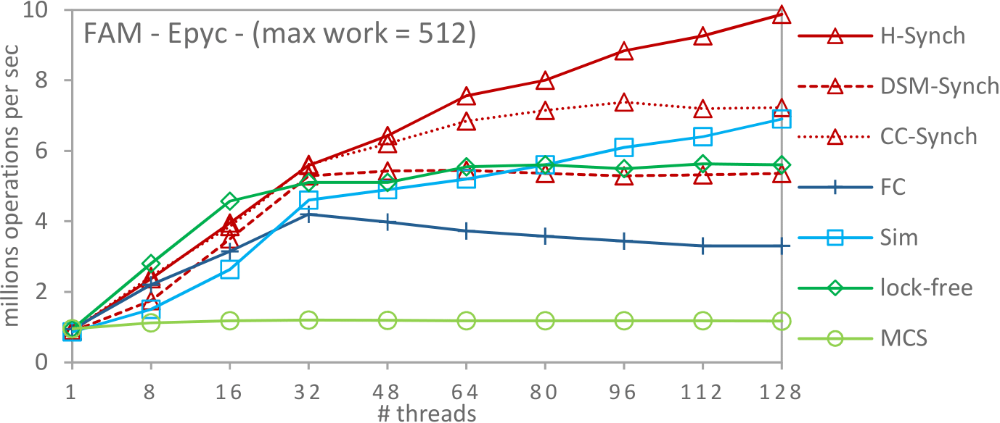

|
The Synch framework
v3.1.2
An open-source framework for concurrent data-structures and benchmarks
|
|
The Synch framework
v3.1.2
An open-source framework for concurrent data-structures and benchmarks
|
This document provides a brief discussion of the expected performance for some concurrent objects provided by the Synch framework. For a more detailed performance analysis of the provided objects, the reader is encouraged to look at [1,2,3,10].
The provided brief performance analysis is performed in a 64-core AMD Epyc multiprocessor (abbr. Epyc) consisting of 2 Epyc 7501 processors that is able to handle 128 threads. Each of these processors consists of 4 silicon dies and each silicon die consist of a NUMA node. Each die contains 8 processing cores, where each core is handling 2 threads. Thus, the AMD multiprocessor consists of 8 NUMA nodes, where each NUMA node consists of 8 processing cores.
At the first experiment, the CC-Synch [1], DSM-Synch [1], H-Synch [1] and PSim [2] combining objects are compared with a universal object based on MCS spin-locks 9, a simple lock-free implementation (provided by the lfuobjectbench.run benchmark), and the flat-combining (abbr. FC) technique provided by [11, 12].
In the experiment of the following figure, the performance of the evaluated combining objects is presented while performing the Fetch&Multiply synthetic benchmark. In this benchmark, a simple concurrent object that supports an atomic Fetch&Multiply float object is implemented. This object is simple enough to exhibit any overheads that a synchronization technique may induce while simulating a very simple concurrent object under high contention. The figure shows the average throughput (Fetch&Multiply operations per second) that each synchronization technique achieves when it executes 10^7 Fetch&Multiply operations (i.e., by setting -r=10000000). Since for different values of threads t, each thread executes 10^7/t Fetch&Multiply operations, this experiment measures strong scaling. Specifically, the horizontal axis represents the number of threads t, while the vertical axis displays the throughput (in millions of operations per second) that each synchronization technique achieves. For each value of t, the experiment has been performed 10 times and averages have been calculated using the bench.sh script. A random number of dummy loop iterations (i.e, by setting -w=512) have been inserted between the execution of two consecutive Fetch&Multiply operations by each thread. In this way, a random work load large enough to avoid unrealistically low cache miss ratios and long runs is simulated. However, this workload is not big enough to substantially reduce the contention. In the experiments performed on the Epyc machine, H-Synch outperforms all other synchronization techniques since it exploits the hierarchical NUMA nature of the Epyc machine. More specifically, H-Synch achieves up to 3 times higher throughput than flat-combining and outperforms CC-Synch by a factor of up to 1.23. The simple lock-free implementation of Fetch&Multiply is slightly slower than PSim and faster that flat-combining. Also, CC-Synch is up to 6 times faster than the object based on MCS spin-locks. CC-Synch performs also very well; its performance is close to that of DSM-Synch and in par with the lock-free implementation.

In the experiment illustrated in the following figure, the behavior of the evaluated objects for different amounts of random work (i.e. for different numbers of dummy loop iterations inserted between the executions of two Fetch&Multiply) is studied. We fix the number of threads to 128 and we perform the experiment for different random work values (0−32k). It is shown that for a wide range of values (64−1024), there are no big differences on the throughput exhibited by the evaluated algorithms. The reason for this is that for all these values the synchronization cost is the dominant performance factor. In cases that the random work is too high (greater than 16k), the throughput of all algorithms degrades and the performance differences among them become minimal since the amount of random work becomes then the dominant performance factor.

The figure below illustrates the performance of some concurrent stack implementations provided by the Synch framework. More specifically, this figure presents the performance of H-Stack [1], DSM-Stack [1], CC-Stack [1], the CLH-Stack that is a simple stack implementation based on CLH queue-locks [5,6], the wait-free SimStack [2], the lock-free stack of [7], and FC-Stack that is a stack implementation based on flat-combining [11,12]. Each of the t threads executes 10^7/t pairs of push and pop operations starting from an empty data structure. This experiment is performed for different values of t. Similarly to the first experiment, a random local work (up to 512 dummy loop iterations) is simulated between the execution of two consecutive operations by the same thread. The stack was initially empty. H-Stack leverages the hierarchical NUMA characteristics of the Epyc machine and it outperforms CC-Stack by a factor of up to 1.25, while being up to 6 times faster than FC-Stack. CC-Stack outperforms DSM-Queue by being 1.16 times faster that SimStack.

Similarly to the previous experiment for stacks, the following figure shows the performance of some concurrent queue implementations provided by the Synch framework. More specifically, this figure presents the performance of H-Queue [1], DSM-Queue [1], CC-Queue [1], the CLH-Queue that is the two lock queue implementation by Michael and Scott [5,6,7], the wait-free SimQueue [1], the lock free queue implementation presented by Michael and Scott in [7], and FC-Queue that is a queue implementation based on flat-combining [11,12]. Each of the t threads executes 10^7/t pairs of enqueue and dequeue operations, starting from an empty data structure. This experiment is performed for different values of t. Similarly to previous experiments, a random local work (up to 512 dummy loop iterations) is simulated between the execution of two consecutive operations by the same thread. The queue was initially empty. H-Queue, which is a queue implementation based on H-Synch, leverages the hierarchical nature of the Epyc machine and outperforms all the other queue implementations. More specifically, H-Queue outperforms CC-Queue by a factor of up to 1.24, while being up to 3 times faster than FC-Queue. CC-Queue and DSM-Queue achieve very similar performance while being faster than SimQueue.

[1]. Panagiota Fatourou, and Nikolaos D. Kallimanis. "Revisiting the combining synchronization technique". ACM SIGPLAN Notices. Vol. 47. No. 8. ACM, PPoPP 2012.
[2]. Panagiota Fatourou, and Nikolaos D. Kallimanis. "A highly-efficient wait-free universal construction". Proceedings of the twenty-third annual ACM symposium on Parallelism in algorithms and architectures (SPAA), 2011.
[3]. Panagiota Fatourou, and Nikolaos D. Kallimanis. "Lock Oscillation: Boosting the Performance of Concurrent Data Structures" Proceedings of the 21st International Conference on Principles of Distributed Systems (Opodis), 2017.
[4]. Yoshihiro Oyama, Kenjiro Taura, and Akinori Yonezawa. "Executing parallel programs with synchronization bottlenecks efficiently". Proceedings of the International Workshop on Parallel and Distributed Computing for Symbolic and Irregular Applications. Vol. 16. 1999.
[5]. Travis S. Craig. "Building FIFO and priority-queueing spin locks from atomic swap". Technical Report TR 93-02-02, Department of Computer Science, University of Washington, February 1993.
[6]. Peter Magnusson, Anders Landin, and Erik Hagersten. "Queue locks on cache coherent multiprocessors". Parallel Processing Symposium, 1994. Proceedings., Eighth International. IEEE, 1994.
[7]. Maged M. Michael, and Michael L. Scott. "Simple, fast, and practical non-blocking and blocking concurrent queue algorithms". Proceedings of the fifteenth annual ACM symposium on Principles of distributed computing. ACM, 1996.
[8]. R. Kent Treiber. "Systems programming: Coping with parallelism". International Business Machines Incorporated, Thomas J. Watson Research Center, 1986.
[9]. John M. Mellor-Crummey, and Michael L. Scott. "Algorithms for scalable synchronization on shared-memory multiprocessors". ACM Transactions on Computer Systems (TOCS) 9.1 (1991): 21-65.
[10]. Panagiota Fatourou, and Nikolaos D. Kallimanis. "Highly-efficient wait-free synchronization". Theory of Computing Systems 55.3 (2014): 475-520.
[11]. Danny Hendler, Itai Incze, Nir Shavit, and Moran Tzafrir. Flat combining and the synchronization-parallelism tradeoff. In Proceedings of the 22nd Annual ACM Symposium on Parallel Algorithms and Architectures, pages 355–364, 2010.
[12]. Danny Hendler, Itai Incze, Nir Shavit, and Moran Tzafrir. The Code for Flat- Combining. http://github.com/mit-carbon/Flat-Combining.